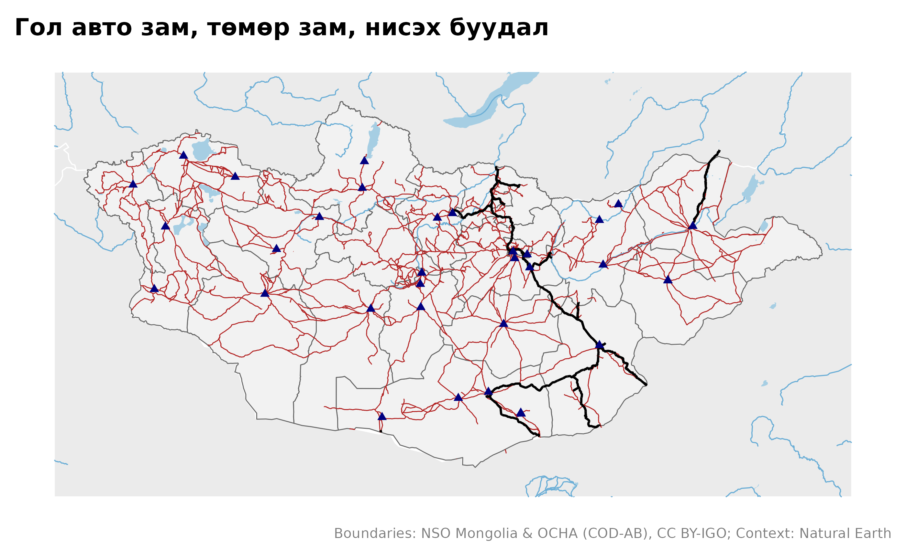
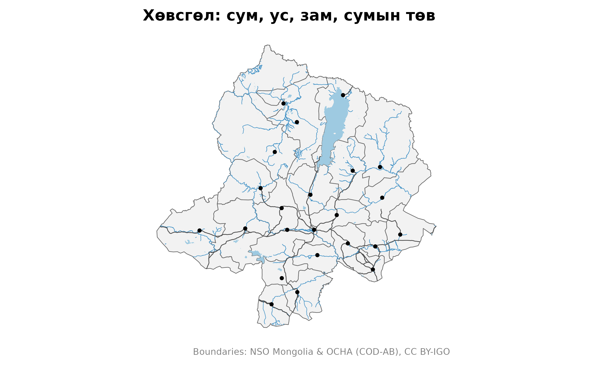
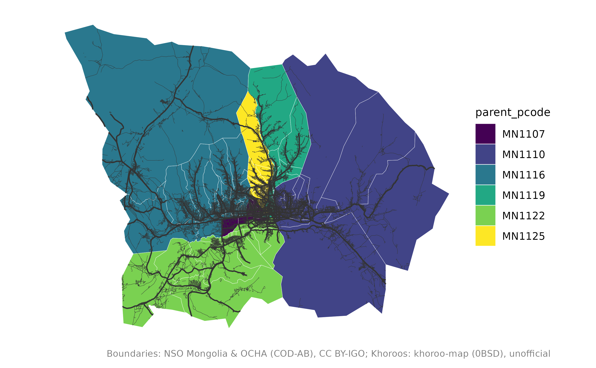

Сэдэвчилсэн давхарга: зам, ус, суурин
Source:vignettes/articles/thematic-layers.Rmd
thematic-layers.Rmd
library(mongolmaps)
library(ggplot2)
options(mongolmaps.lang = "mn")Хил хязгаараас гадна mongolmaps газрын зургийг уншигдахуйц болгох
давхаргуудыг өгнө. Жижиг давхарга багцтай ирдэг; томыг нь нэг удаа
татаж, хадгална (mn_cache_dir()).
| Функц | Агуулга | Эх сурвалж | Хэрхэн авах |
|---|---|---|---|
mn_settlements() |
нийслэл, аймаг, сумын төв | Wikidata | багцад |
mn_neighbours() |
Монголын эргэн тойрон дахь Орос, Хятад, Казахстан | Natural Earth | багцад |
mn_rivers(), mn_lakes()
|
томоохон гол, нуур | Natural Earth | багцад |
mn_rivers("all"), mn_lakes("all")
|
бүх гол, горхи, усан сан | OpenStreetMap | татна, ~20 МБ |
mn_roads() |
авто зам, гудамж | OpenStreetMap | татна, ~30 МБ |
mn_railways(), mn_airports()
|
төмөр зам, өртөө, нисэх буудал | OpenStreetMap | татна, <1 МБ |
mn_places() |
хот, тосгон, суурин | OpenStreetMap | татна, <1 МБ |
Улсын хэмжээнд
mn_map(mn_aimags(), context = TRUE) +
geom_sf(data = mn_roads(), colour = "firebrick", linewidth = 0.25) +
geom_sf(data = mn_railways(), colour = "black", linewidth = 0.6) +
geom_sf(data = mn_airports(), shape = 17, colour = "navy") +
labs(title = "Гол авто зам, төмөр зам, нисэх буудал")
Нэг аймаг
within тухайн газар доторх объектуудыг үлдээж, шугамыг
хил дээр нь тасална:
aimag <- "Хөвсгөл"
mn_map(mn_soums(aimag = aimag)) +
geom_sf(data = mn_lakes("all", within = aimag), fill = "#9ecae1", colour = NA) +
geom_sf(data = mn_rivers("all", within = aimag), colour = "#4292c6", linewidth = 0.2) +
geom_sf(data = mn_roads(within = aimag), colour = "grey30", linewidth = 0.3) +
geom_sf(data = mn_settlements(within = aimag), size = 1) +
labs(title = "Хөвсгөл: сум, ус, зам, сумын төв")
Улаанбаатарын гудамж
central <- c("БГД", "БЗД", "ЧД", "ХУД", "СХД", "СБД")
streets <- mn_roads(class = c("main", "minor"), within = central)
#> Re-reading with feature count reset from 34522 to 34521
mn_map(mn_khoroos(district = central), fill = parent_pcode) +
geom_sf(data = streets, aes(linewidth = class), colour = "grey20") +
scale_linewidth_manual(values = c(main = 0.5, minor = 0.1), guide = "none")
Эх сурвалжийг дурдах
OpenStreetMap-ийн давхарга Open Database License (ODbL) лицензтэй. Нийтлэхдээ дурдана уу:
mn_citation(c("admin", "osm_roads", "osm_water"))
#> [1] "Boundaries: NSO Mongolia & OCHA (COD-AB), CC BY-IGO; Roads: (c) OpenStreetMap contributors, ODbL; Water: (c) OpenStreetMap contributors, ODbL"